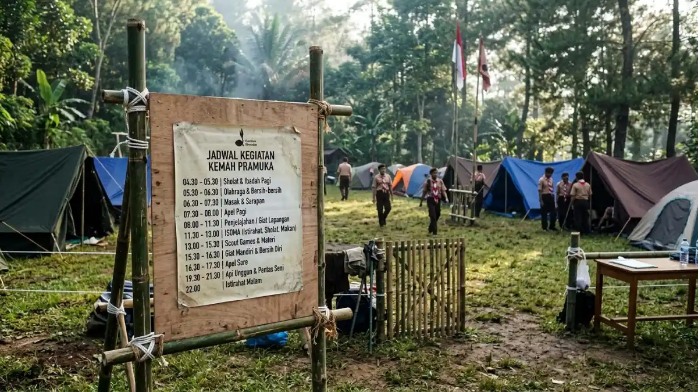
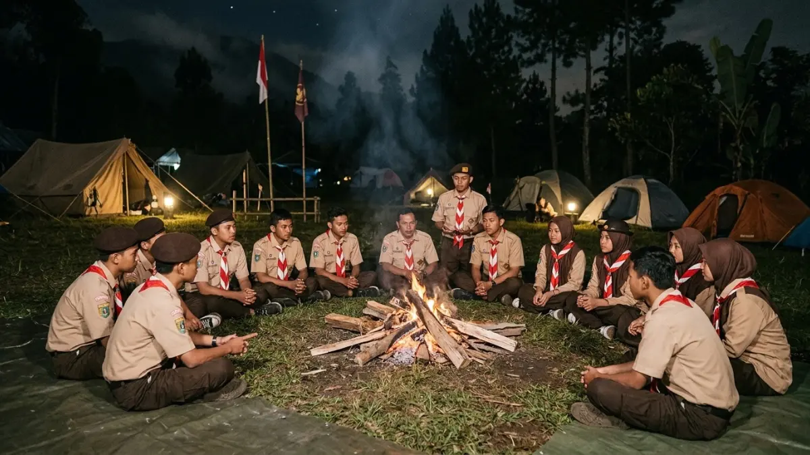

Ilustrasi Contoh jadwal kegiatan kemah pramuka yang ditempel di papan pengumuman area camping Lembah Tumpang.Jadwal kegiatan kemah pramuka Lembah Tumpang disusun mulai dari kedatangan, upacara, kegiatan inti, api unggun, hingga penutupan, dengan porsi istirahat yang seimbang dan rencana cadangan hujan.
- Kemah dua hari satu malam cocok untuk pemula, sedangkan tiga hari dua malam memberi ruang untuk kegiatan lebih mendalam.
- Waktu tempuh dari pusat Kota Malang sekitar 32 menit menurut Liputan6, sehingga jam kedatangan perlu dihitung dari titik keberangkatan.
- Setiap hari sebaiknya memuat kegiatan fisik, kegiatan berpikir, dan kegiatan kebersamaan.
- Jadwal cadangan dalam ruangan wajib disiapkan untuk cuaca hujan.
- Jam buka resort perlu dikonfirmasi agar rundown tidak bertabrakan dengan aturan lokasi.
- Bagaimana Contoh Jadwal Kemah Pramuka 2 Hari 1 Malam?
- Bagaimana Contoh Jadwal Kemah 3 Hari 2 Malam?
- Pukul Berapa Sebaiknya Rombongan Tiba di Lembah Tumpang?
- Kegiatan Apa yang Cocok untuk Siang Hari?
- Kegiatan Apa yang Cocok untuk Malam Hari?
- Bagaimana Menyusun Jadwal Cadangan Saat Hujan?
- Bagaimana Membagi Porsi Istirahat dan Kegiatan?
- Bagaimana Mengevaluasi Jadwal Setelah Kemah Selesai?
- Kesimpulan
- FAQ
Bagaimana Contoh Jadwal Kemah Pramuka 2 Hari 1 Malam?
Contoh jadwal dua hari satu malam dimulai dari kedatangan dan pendirian tenda pada hari pertama, kegiatan inti dan api unggun malam hari, lalu senam, kegiatan penutup, dan kepulangan pada hari kedua.
Berikut kerangka yang dapat disesuaikan.
Hari 1
| Waktu | Kegiatan |
|---|---|
| 07.30–09.00 | Berangkat dan tiba, registrasi peserta |
| 09.00–10.30 | Mendirikan tenda dan pembagian area regu |
| 10.30–11.30 | Upacara pembukaan dan pengarahan |
| 12.00–13.00 | Ishoma |
| 13.00–15.30 | Pionering dan permainan regu |
| 16.00–17.30 | Mandi, istirahat, persiapan makan malam |
| 19.30–21.30 | Api unggun dan pentas seni |
| 22.00 | Apel malam dan istirahat |
Hari 2
| Waktu | Kegiatan |
|---|---|
| 05.00–06.00 | Bangun, ibadah, senam pagi |
| 06.00–08.00 | Sarapan dan membersihkan area |
| 08.00–10.30 | Jelajah atau sandi |
| 10.30–11.30 | Evaluasi dan upacara penutupan |
| 12.00 | Makan siang dan pulang |
Waktu pastinya perlu disesuaikan dengan jam operasional resort dan kondisi peserta.
Bagaimana Contoh Jadwal Kemah 3 Hari 2 Malam?
Jadwal tiga hari dua malam menambah satu hari untuk kegiatan lanjutan, seperti lomba antar regu, kegiatan sosial, dan pelatihan kepemimpinan, sehingga ritme acara lebih longgar.
Hari pertama dapat difokuskan pada kedatangan, pembentukan regu, dan orientasi lokasi. Hari kedua berisi kegiatan inti: pionering, pertolongan pertama, jelajah, dan lomba kreativitas. Malam kedua dapat diisi api unggun dengan pentas seni. Hari ketiga digunakan untuk kerja bakti, refleksi, dan upacara penutupan.
Format ini cocok untuk latihan dasar kepemimpinan atau pelantikan anggota baru, sebab peserta memiliki waktu beradaptasi.
Namun, tambahan hari berarti tambahan biaya konsumsi, pengawasan, dan kebutuhan perlengkapan sehingga panitia harus memastikan anggaran serta tenaga pembina mencukupi.
Pukul Berapa Sebaiknya Rombongan Tiba di Lembah Tumpang?
Rombongan sebaiknya tiba pagi hari agar pendirian tenda selesai sebelum siang, dengan memperhitungkan waktu tempuh sekitar 32 menit dari pusat Kota Malang ditambah waktu cadangan.
Liputan6 mencatat jarak sekitar 14,7 km dari pusat kota dengan waktu tempuh kurang lebih 32 menit. Angka itu berlaku untuk kondisi normal, sedangkan bus besar yang membawa banyak peserta biasanya memerlukan waktu lebih lama.
Jam buka juga berbeda antarsumber, yaitu 07.00–17.00 WIB menurut detikJatim (26 Desember 2023) dan 08.00–17.00 WIB. Karena itu, hubungi pengelola untuk memastikan jam masuk, lalu tambahkan cadangan waktu 30–60 menit agar peserta tidak menunggu terlalu lama di luar lokasi.
Kegiatan Apa yang Cocok untuk Siang Hari?
Kegiatan siang hari yang cocok adalah pionering, permainan kelompok, jelajah, dan lomba regu, karena cahaya cukup dan peserta masih bertenaga setelah makan siang.
Namun, siang hari juga merupakan waktu tersulit karena panas dan kelelahan. Panitia perlu menyediakan air minum, area teduh, dan jeda istirahat.
Pionering sebaiknya dimulai dengan pengenalan simpul sederhana, lalu dilanjutkan dengan proyek regu seperti membuat menara atau tandu.
Jelajah dapat memakai pos-pos berisi tugas ringan, seperti sandi atau pertolongan pertama. Hindari kegiatan fisik berat tepat setelah makan. Pembina berjaga di setiap pos dan memastikan peserta tidak berjalan sendirian untuk menjaga keselamatan.

Ilustrasi Suasana api unggun malam hari yang menjadi puncak kebersamaan peserta kemah pramuka di Lembah Tumpang.Kegiatan Apa yang Cocok untuk Malam Hari?
Kegiatan malam hari yang cocok adalah api unggun, pentas seni, permainan tenang, dan apel malam, karena suasana mendukung kebersamaan dan refleksi tanpa kegiatan fisik berat.
Api unggun merupakan puncak banyak perkemahan Pramuka. Panitia perlu memastikan izin pengelola dan menyiapkan area aman, jauh dari tenda, dilengkapi pemadam sederhana seperti air atau pasir. Pentas seni dapat berisi yel-yel, lagu, drama singkat, dan pembacaan puisi.
Setelah acara, lakukan apel malam untuk mengecek jumlah peserta dan mengingatkan jam tidur. Jika pengelola tidak mengizinkan api, gunakan unggun simulasi dengan lampu atau lilin di tempat aman. Jaga volume suara agar tidak mengganggu pengunjung lain.
Bagaimana Menyusun Jadwal Cadangan Saat Hujan?
Jadwal cadangan saat hujan disusun dengan memindahkan kegiatan ke ruangan seperti gazebo atau ruang pertemuan, lalu mengganti kegiatan fisik dengan materi, permainan dalam ruang, dan kuis.
Liputan6 menyebut resort memiliki ruang pertemuan atau convention hall yang dapat disewakan serta gazebo, sehingga kemungkinan ada tempat berteduh. Ketersediaan dan tarifnya wajib dikonfirmasi ke pengelola.
Siapkan modul cadangan, misalnya sandi, kuis kepramukaan, simulasi P3K, dan pentas seni dalam ruangan. Pastikan tenda diperiksa terhadap kebocoran dan peserta memakai jas hujan.
Jika hujan deras disertai petir, hentikan kegiatan di lapangan dan kumpulkan peserta di tempat aman sampai kondisi membaik.
Bagaimana Membagi Porsi Istirahat dan Kegiatan?
Pembagian yang baik adalah memberi jeda istirahat setelah setiap sesi utama, dengan tidur cukup, makan teratur, dan tidak lebih dari tiga kegiatan besar per hari.
Kegiatan yang terlalu padat membuat peserta lelah dan mudah cedera. Beri jeda 15–30 menit setelah sesi fisik, serta waktu makan dan ibadah yang cukup. Untuk peserta Siaga atau Penggalang awal, kurangi durasi dan perbanyak permainan.
Untuk Penegak dan Pandega, tantangan dapat ditingkatkan. Pembina dapat mengamati wajah dan energi peserta; bila banyak yang kelelahan, ubah kegiatan menjadi lebih ringan. Prinsip ini bersifat umum dan perlu disesuaikan dengan kondisi kelompok.
Bagaimana Mengevaluasi Jadwal Setelah Kemah Selesai?
Evaluasi jadwal dilakukan dengan mencatat kegiatan yang tepat waktu, yang terlambat, dan yang perlu diganti, lalu mengumpulkan masukan peserta dan pembina untuk acara berikutnya.
Lakukan evaluasi singkat setiap malam dan evaluasi lengkap setelah acara selesai. Bandingkan jadwal rencana dengan realisasi, lalu catat penyebab keterlambatan, seperti perjalanan, cuaca, atau pembagian pos yang kurang efisien.
Minta peserta mengisi formulir pendek tentang kegiatan favorit dan yang membosankan. Dokumentasikan hasilnya sebagai arsip gugus depan agar perencanaan tahun berikutnya lebih mudah.
Cara ini membantu panitia menyempurnakan kemah dari waktu ke waktu tanpa mengulang kesalahan yang sama.
Kesimpulan
Susun jadwal dengan memperhitungkan waktu tempuh, jam buka resort, dan kondisi peserta. Pilih dua hari satu malam untuk pemula, sediakan jeda istirahat, dan siapkan kegiatan cadangan hujan. Evaluasi tiap malam agar kemah berikutnya semakin tertata.
FAQ (Pertanyaan yang Sering Diajukan)